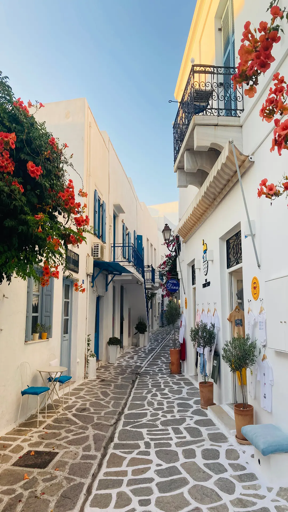
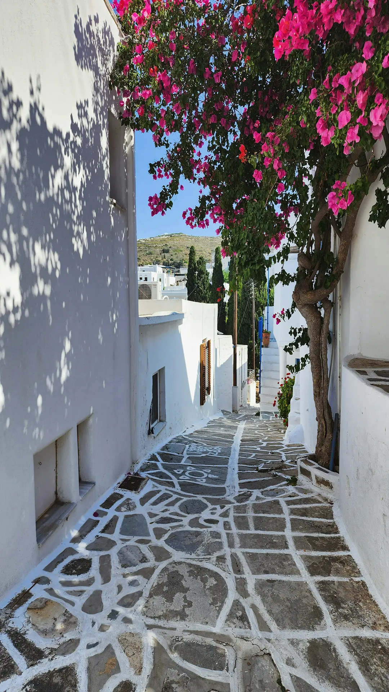
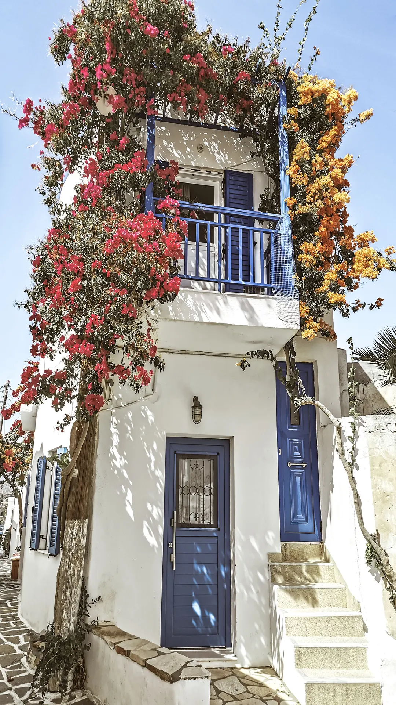

Old Streets
Wander through whitewashed alleyways with small artisan shops, old stone details, and shaded corners for coffee.
Quiet corners, short drives, unforgettable views.
A relaxed base for beaches, villages, and local rhythms.
From La Maison Vert Amande, you can explore traditional streets, calm waterfronts, and simple tavernas without long drives. The nearby area is ideal for slow mornings, afternoon swims, and sunset walks.
Three nearby places to start with.

Wander through whitewashed alleyways with small artisan shops, old stone details, and shaded corners for coffee.

Discover quiet village pockets where architecture, sea breeze, and local life blend into a calm daily rhythm.

End your day by the water with an easy stroll, a light meal, and sunset colors over the horizon.

Simple planning for nearby visits.